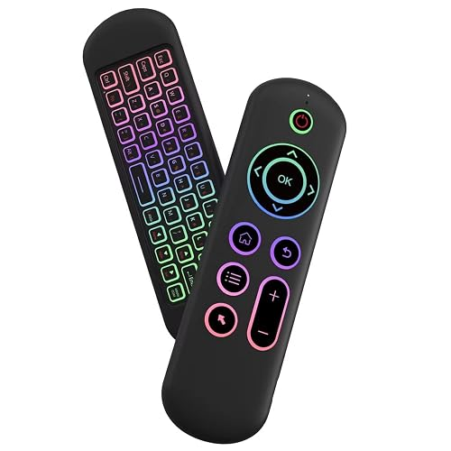

New: a Gadgets section with unboxing videos and Amazon links.
Take a look →Meet your new favourite apps.
Seven free apps for Windows, macOS, Linux and Android TV, built to be fast, clean and private. Plus the gadgets I recommend.
Free · Windows, macOS, Linux and Android TV · No account needed
MacDock

7free apps
4platforms
0accounts needed
100%private, on-device
The appsEverything I've built
Open an app's page for screenshots, install steps and downloads.
Windows 11MacDock
A macOS-style dock and menu bar for your desktop.
- Magnifying dock, Launchpad and Control Center
- Light and dark icon sets
- Runs without admin rights or an SDK
Learn more →
Windows 10/11Gallery for Windows
A fast, native photo gallery that never uploads or changes your pictures.
- Browse by years, months and days
- Lightbox with filmstrip, zoom and slideshow
- Built-in editor that saves a copy
Learn more →
Windows · macOS · LinuxRustZip
A fast archive manager with a clean look.
- Opens ZIP, 7Z, RAR, TAR, GZ, XZ and ZST
- Create, extract, test and repair
- Background jobs with progress and Cancel
Learn more →
Windows 10/11Brightness Controller
One tray panel for the brightness of every display.
- A slider per screen, with optional Sync
- Works with laptop screens and DDC/CI monitors
- About 1.2 MB, idles at about 2 MB
Learn more →
Windows 10/11SideHatch
Install IPA files on your iPhone from Windows.
- Plug in and drag an IPA onto the window
- A free Apple ID is enough
- Optional automatic re-signing with SideHatch Plus
Learn more →
Android TVFile Manager TV
A file manager made for the remote.
- Storage Cleaner and APK Extractor
- Sidebar or floating top bar layouts
- 7 themes, or your own background
Learn more →
Android TVtvOS Launcher
A tvOS-style home screen launcher for Android TV.
- Designed for the remote and the big screen
- Android 5.0 or newer
- Standard and Full (ADB) editions
Learn more →
MacDockThe Mac dock, on Windows 11.
Icons grow as you move across them. Open apps from Launchpad and use quick settings from the menu bar. Runs without admin rights.
- Light and dark icon sets
- Starts at login, restores your taskbar on quit
- Windows 11 (Windows 10 mostly works), x64
Learn more Gallery for WindowsYour photos, light as a feather.
Browse by year, month or day. Edit without ever touching the original. Everything stays on your PC.
- Built-in editor with adjust, filters and crop
- Light, dark or automatic theme
- Native app for Windows 10 and 11
Learn more RustZipArchives, without the clutter.
Step into archives like folders, search inside them and double-click to open a file. One small program with no extra tools.
- ZIP, 7Z, RAR, TAR, GZ, XZ and ZST
- Light and dark, with your choice of accent colour
- Installs for your user, no admin rights
Learn more Brightness ControllerOne control for every display.
A tiny tray app that sets the brightness of your laptop screen and external monitors from one Apple-style panel.
- Shortcuts, step size and eight accent colours
- Laptop screens via WMI, monitors via DDC/CI
- No background polling
Learn more SideHatchSideload to your iPhone from Windows.
Plug in your device, pick an IPA, and it lands on your home screen. A free Apple ID is enough.
- Devices are detected automatically
- Follows your Windows theme
- Free Apple IDs allow 3 apps per device, re-signed every 7 days
Learn more File Manager TVClean up your TV from the couch.
Browse storage, free up space and extract APKs, all with a D-pad.
- Storage Cleaner: large files, duplicates, installers, temp and empty folders
- APK Extractor, including split APKs
- Android TV / Google TV, Android 8.0+
Learn more tvOS LauncherA tvOS-style home screen for Android TV.
A clean launcher designed for the remote and the big screen.
- Android TV / Google TV, Android 5.0 or newer
- Standard edition to sideload by hand
- Full edition for ADB installs
Learn more GadgetsUnbox it first, then buy it.
Short unboxing videos on Instagram for the gadgets I actually use, with a direct Amazon link under each.
- Honest one-line verdicts
- Filter by category
- Affiliate links, clearly marked
See gadgets Gadgets

Unboxing videosWatch it on Instagram, then check it on Amazon.
At a glance
Find the right app
More
Small details that matter
Private by designGallery never uploads or edits your originals.
Light and darkEvery page has a theme toggle that remembers you.
No admin neededMacDock, RustZip and SideHatch install for your user only.
Remote friendlyThe TV apps are made for the D-pad.
Getting started
Up and running in minutes
01Pick an appChoose from the Windows, macOS, Linux or Android TV apps.
02Open its pageSee screenshots, features and requirements.
03Install and enjoyEach page has the download and the short install steps.
FAQ
Questions, answered
Where do I download the apps?
Open an app from the list above. Its own page has the Download button and the install steps.
Does MacDock need admin rights?
No. It installs for your user and needs no SDK.
Does Gallery upload my photos?
No. It runs locally and never modifies your originals. Edits are saved as copies.
Does Brightness Controller work on external monitors?
Yes, if the monitor supports DDC/CI. Laptop screens work through WMI.
What are Apple's limits with SideHatch?
Free Apple IDs allow 3 sideloaded apps per device, and they expire after 7 days unless re-signed.
How do I install the TV apps?
Copy the APK to your TV with a USB drive or a sideload app, or use adb. The steps are on each app's page.
Why is there a Gadgets section?
It's where I share unboxing videos and Amazon links for gadgets I recommend. Those links are affiliate links.
Find your next favourite app.
Free. No account needed.